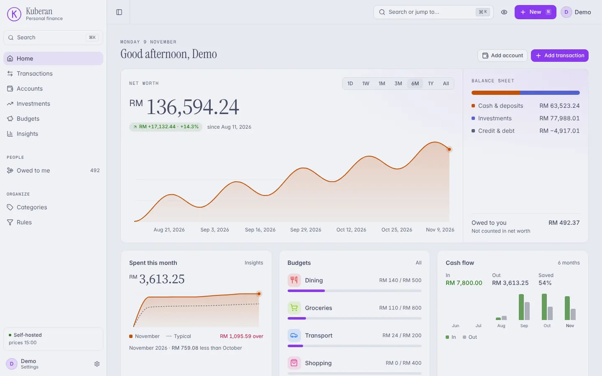
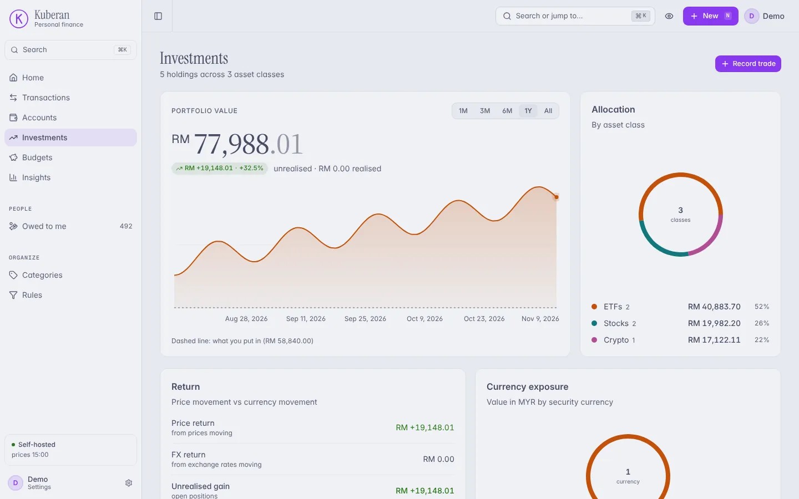
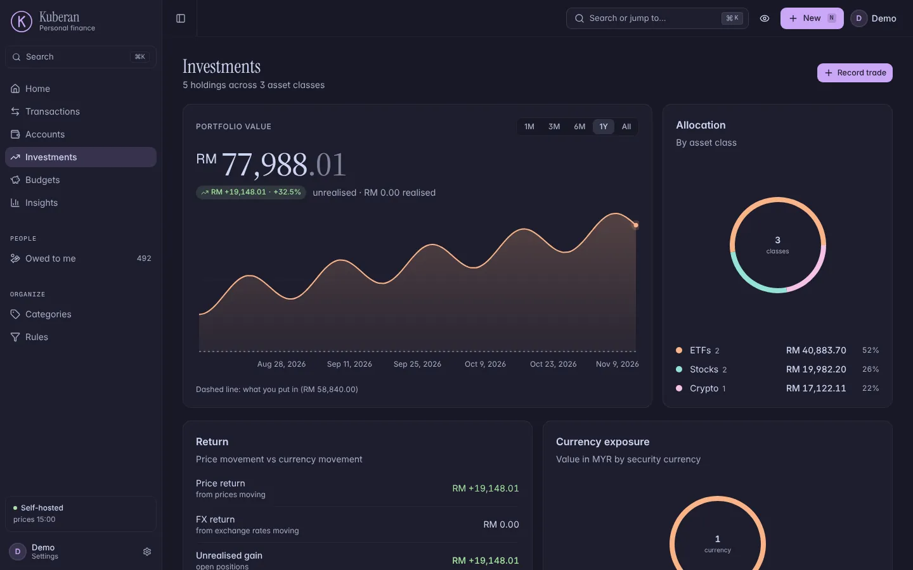
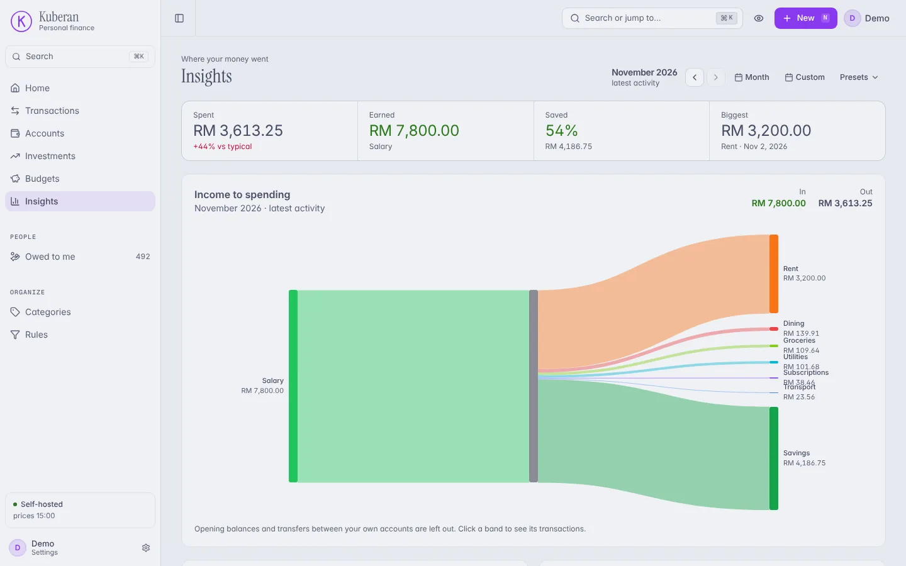
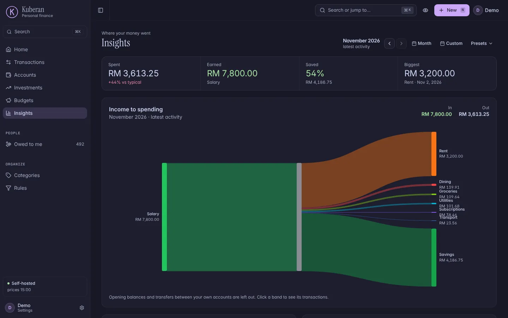
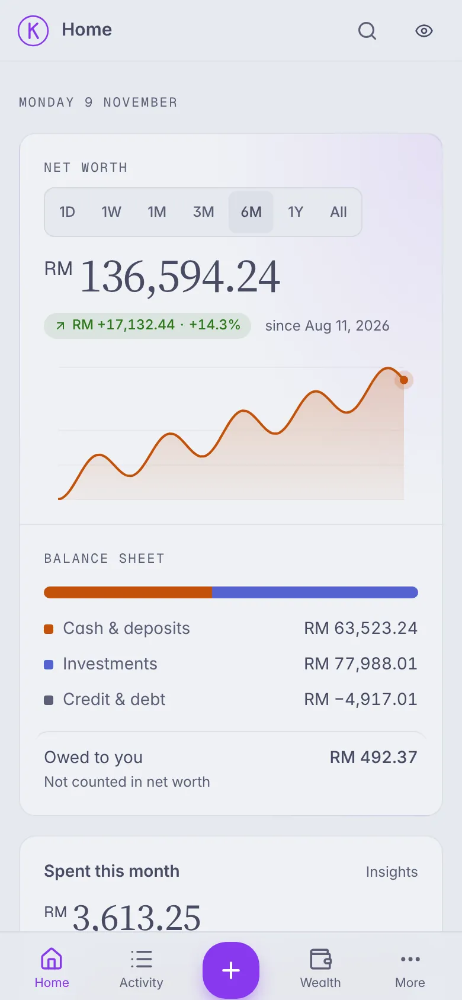
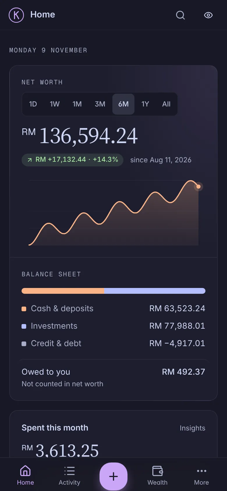
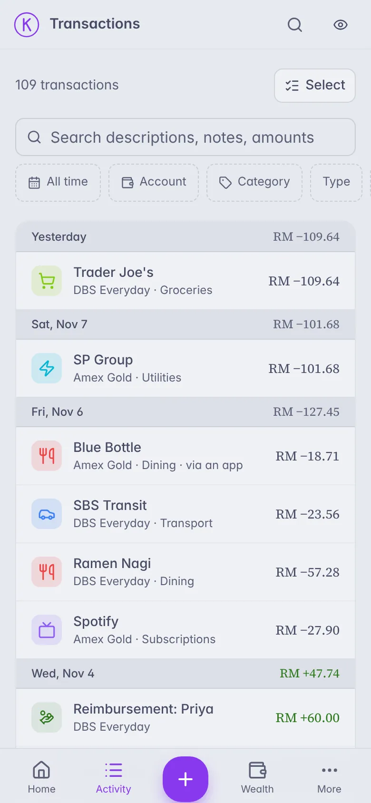
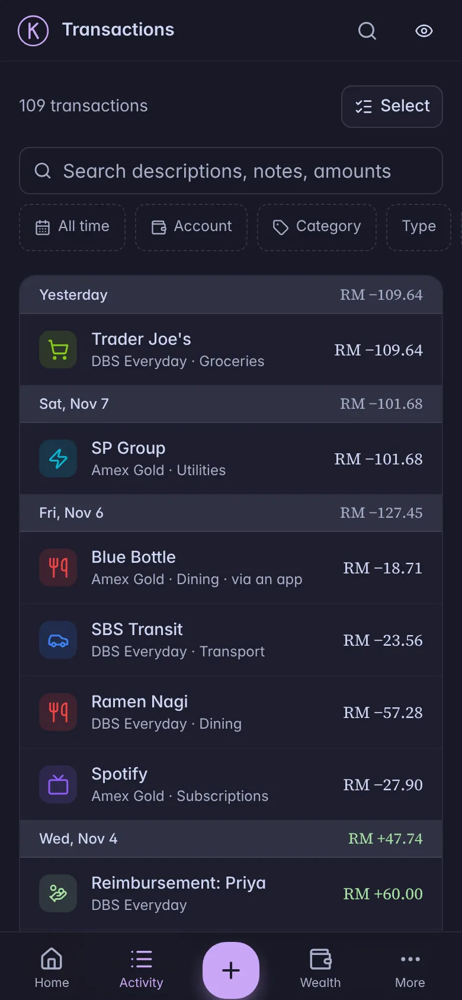

Your wealth,
on your server.
Track every account, budget and holding in one place you run yourself. Connect Claude to ask about your money, or log an expense from Telegram. Your data stays in your own database, and an assistant sees only what you allow.
$ git clone https://github.com/zihangg/kuberan && cd kuberan $ cp .env.prod.example .env.prod # add your secrets $ ./deploy/deploy.sh
Needs a machine with Docker Compose. Postgres is included. Read the self-hosting guide first: you fill in a handful of secrets.
- No bank logins
- No ads or data sales
- Export anytime

- Your databasePostgres on hardware you control, with automated backups and a full CSV export.
- Claude through MCPOAuth 2.1, per-scope consent. Read-only unless you switch writes on.
- TelegramCheck balances and log expenses from a chat with your own bot.
- Real investingStocks, ETFs, crypto, bonds and fixed deposits, with daily prices.
- Multi-currencyEvery account in its own currency, totals in the one you report in.
One calm place for the whole picture
Built for people who want their money in one app they trust, not another account on someone else's cloud.
Accounts and net worth
Cash, credit cards, loans, investments and fixed deposits. Net worth history, a balance sheet and sparklines per account.
Budgets that explain themselves
Monthly or yearly budgets per category, progress against your own typical spending, and insights on where the money went.
Transactions, fast
Search, bulk edit, rules that categorise for you, CSV and bank-statement imports, and receipt attachments.
Money owed to you
Split a bill or lend money, then track who owes what, record repayments and write off what is lost.
Honest multi-currency
Rates are applied on the day, never guessed as 1:1. If a rate is missing, the app says so instead of showing a wrong total.
Investments done properly
Buy, sell, dividends and splits, cost basis, realised gains, and price versus currency return. Import IBKR statements.
Ask Claude about your money
Kuberan speaks MCP. Add it to Claude as a connector, sign in once, and ask questions in plain language. Nothing leaves your server except the answers you ask for.
- OAuth 2.1 with dynamic client registration. No API keys to paste.
- You approve each permission. Reading is the default; changes are opt-in, capped per change and rate limited.
- See and revoke every connected app, with an activity log of what it did.
“How am I doing on dining this month?”
You have spent RM 139.91 of your RM 500 dining budget, 28% with most of the month still to go. Groceries and transport are also well under budget.
used: get_budget_progress (read-only)
Light, dark and in your pocket
Real screenshots of the demo household, not mock-ups. The app follows your system theme and works as a home-screen app on your phone.








Running in an afternoon
Kuberan is a Go API, a Next.js app and Postgres, packaged with Docker Compose. Optional pieces, each off until you want them: the Telegram bot, the price worker, receipt storage and encrypted off-site backups.
Clone and configure
Copy
.env.prod.exampleto.env.prodand fill in the secrets. Each variable is explained in the guide.Deploy
./deploy/deploy.shbuilds the images, backs up, migrates and starts everything, waiting for health.Sign in and create your account
Put it behind HTTPS (a Cloudflare tunnel or any reverse proxy), register, and add your first account.